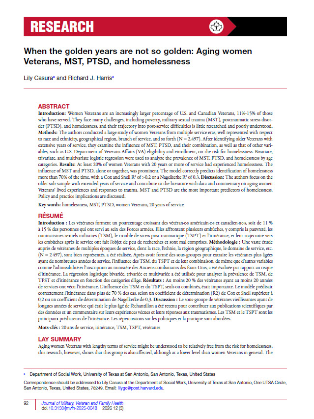
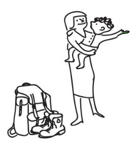
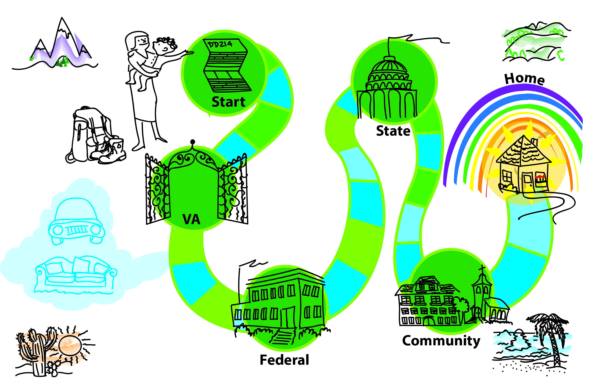
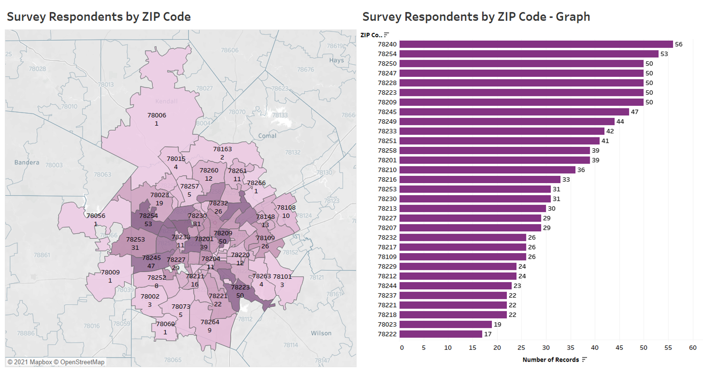
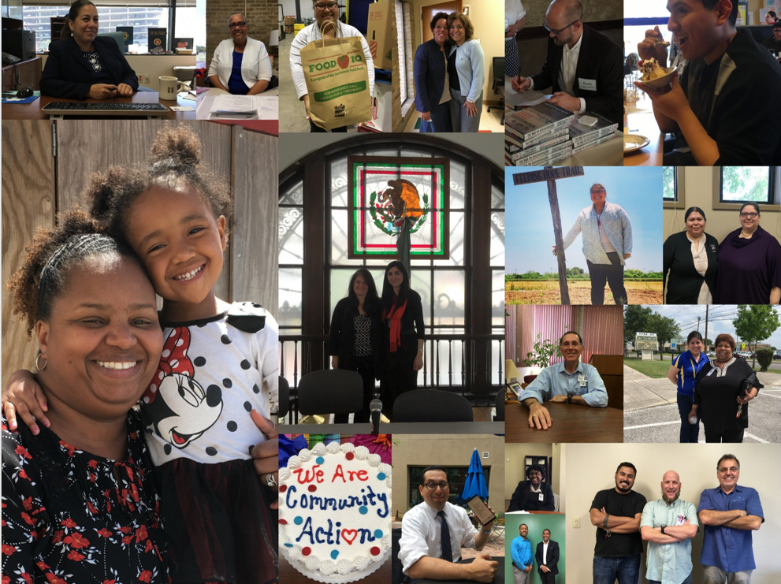
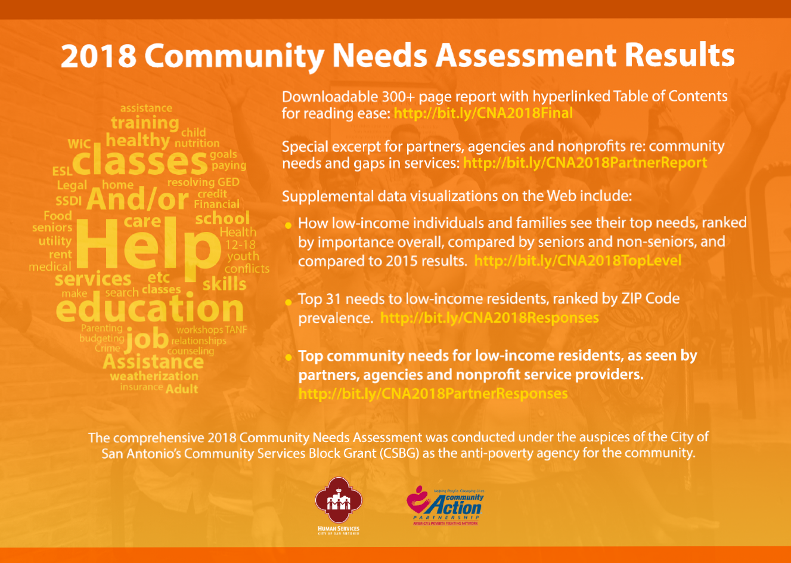
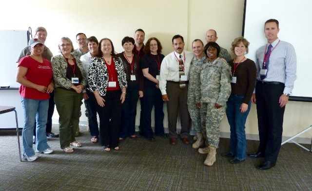
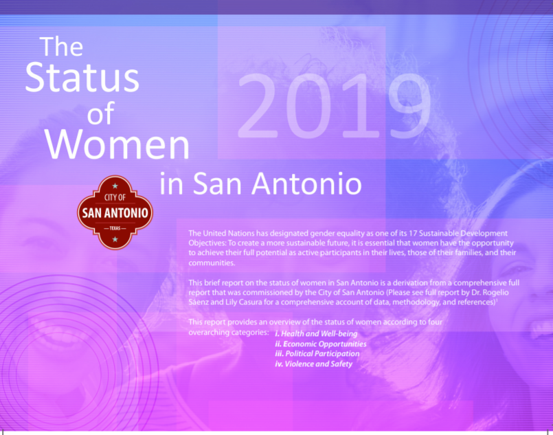
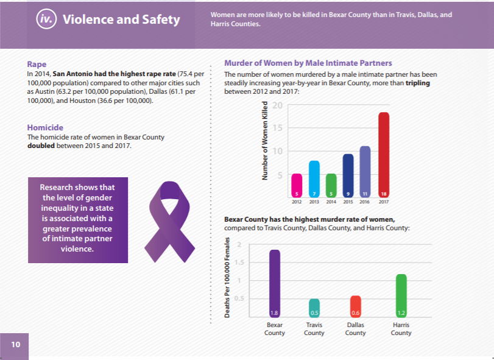
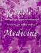

Peer-Reviewed Journal Articles
Journal of Military, Veteran and Family Health · 2026
"When the Golden Years Are Not So Golden: Aging Women Veterans, MST, PTSD and Homelessness"

Book Chapters

Oxford University Press · 2024
Routledge · 2013
"Healing Combat Trauma: The Website, the Vision, the Impact"

Survey Research
University of Texas at San Antonio · 2017–present
Principal Investigator: "Internet Survey of Women Veterans re: Housing Instability post-Military Service"
This IRB-approved study has generated 50,000+ published words on women veterans and homelessness — and research findings that inspired a character on a popular crime drama.

Commissioned illustration for the women veterans research

Commissioned "map out of homelessness" for women veterans
San Antonio Metropolitan Health District · 2021
Community-Based Domestic Violence Survey of San Antonio and Bexar County — Summary Report
Community-wide survey on domestic violence before and during COVID-19, conducted with a team of UTSA researchers. Part of a grant-funded project totaling approximately $150K.

Survey respondents by ZIP code — showing geographic distribution of participants across Bexar County
City of San Antonio · 2018
Comprehensive Community Needs Assessment
Community-wide survey of low-income individuals and service providers. A 300+ page report with supplemental Tableau visualizations and a partner excerpt — translated into multiple formats for multiple audiences.

Key informants interviewed for the 2018 Community Needs Assessment

CNA results made available online in multiple formats, including Tableau visualizations
Independent · 2014
National Survey of Women Veterans on Homelessness after Military Service
Training & Certifications
VA National Center for PTSD · May 2010
National Center for PTSD Training — Menlo Park, CA

National Center for PTSD training, Menlo Park, CA — May 2010
Center for Mind-Body Medicine, Washington D.C.
Practitioner and Advanced Level Certifications in Mind-Body Medicine
2017
Certificate of Continuing Professional Education — "Grounded Theory Methodologies for Social Justice Projects"
White Papers & Reports
N-IUSSP · 2020
"Frontline Workers in the U.S.: Race, Ethnicity, and Gender"
Mayor's Commission on the Status of Women · 2019
"The Status of Women in San Antonio Report"
A locally influential civic report commissioned by the City of San Antonio — covering health, economic opportunities, political participation, and violence and safety. The violence and safety data in particular drew significant public attention.

Report cover

Violence and safety findings
UTSA Policy Studies Center · 2019
"Examining 20 Years of Misdemeanor Family Violence Offenses in Bexar County"
UTSA Policy Studies Center · 2019
"Examining 10 Years of Felony Family Violence Offenses in Bexar County"
UTSA Policy Studies Center · 2019
Books
Self Health Press · 2000
Gentle Medicine: Treating Chronic Fatigue Syndrome and Fibromyalgia Successfully with Natural Medicine

Work Cited In
Routledge · 2018
Investigative Reporting: From Premise to Publication, 2nd Edition
2018
Homelessness among U.S. Veterans: A Critical Perspective
American Bar Association · 2010
The Lawyer's Guide to Working Smarter with Knowledge Tools